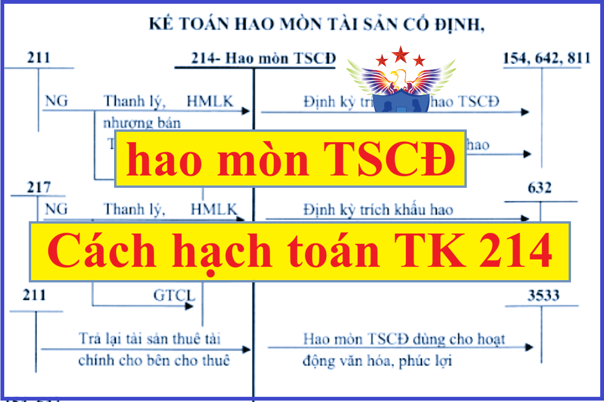

Hướng dẫn cách hạch toán hao mòn tài sản cố định - Tài khoản 214 áp dụng chế độ kế toán theo Thông tư 99/2025/TT-BTC mới nhất 2026, hạch toán tăng, giảm giá trị hao mòn TSCĐ hữu hình, vô hình, thuê tài chính, hạch toán trích khấu hao TSCĐ, hạch toán giảm tài sản cố định...
1. Tài khoản 214 - Hao mòn tài sản cố định
Nguyên tắc kế toán
a) Tài khoản này dùng để phản ánh tình hình tăng, giảm giá trị hao mòn và giá trị hao mòn lũy kế của các loại TSCĐ và bất động sản đầu tư (BĐSĐT) trong quá trình sử dụng do trích khấu hao TSCĐ, BĐSĐT và những khoản tăng, giảm hao mòn khác của TSCĐ, BĐSĐT.
b) Về nguyên tắc, mọi TSCĐ, BĐSĐT của doanh nghiệp liên quan đến hoạt động sản xuất, kinh doanh (bao gồm cả tài sản chưa dùng, không cần dùng, không dùng được chờ thanh lý, nhượng bán,...) hoặc cho thuê (trừ khi đã khấu hao hết) đều phải trích khấu hao theo quy định hiện hành. Khấu hao TSCĐ, BĐSĐT dùng trong sản xuất, kinh doanh hạch toán vào chi phí sản xuất, kinh doanh trong kỳ; khấu hao TSCĐ dùng cho hoạt động đầu tư XDCB hạch toán vào chi phí đầu tư XDCB. Các trường hợp đặc biệt không phải trích khấu hao (như TSCĐ dự trữ, TSCĐ dùng chung cho xã hội,...), doanh nghiệp phải thực hiện theo quy định của pháp luật hiện hành. Đối với TSCĐ dùng cho mục đích phúc lợi thì không phải trích khấu hao tính vào chi phí sản xuất, kinh doanh mà chỉ tính hao mòn TSCĐ và hạch toán giảm Quỹ phúc lợi đã hình thành TSCĐ đó.
c) Căn cứ vào quy định của pháp luật và yêu cầu quản lý của doanh nghiệp để lựa chọn một trong các phương pháp tính, trích khấu hao theo quy định của pháp luật cho phù hợp với từng TSCĐ nhằm kích thích sự phát triển sản xuất, kinh doanh, đảm bảo việc thu hồi vốn nhanh, đầy đủ và phù hợp với cách thức thu hồi lợi ích kinh tế trong tương lai đối với TSCĐ đó của doanh nghiệp.
Phương pháp khấu hao được áp dụng cho từng TSCĐ, BĐSĐT phải được thực hiện nhất quán và có thể được thay đổi khi có sự thay đổi đáng kể cách thức thu hồi lợi ích kinh tế của TSCĐ và BĐSĐT.
Xem thêm: Các phương pháp trích khấu hao TSCĐ
d) Hàng năm, khi doanh nghiệp có sự thay đổi lớn về thời gian dự kiến sử dụng của TSCĐ hoặc cách thức thu hồi lợi ích từ TSCĐ thì doanh nghiệp cần xem xét lại thời gian khấu hao và phương pháp khấu hao TSCĐ. Nếu thời gian sử dụng hữu ích ước tính của tài sản khác biệt lớn so với các dự kiến trước đó thì thời gian khấu hao phải được thay đổi tương ứng. Phương pháp khấu hao TSCĐ được thay đổi khi có sự thay đổi đáng kể cách thức ước tính thu hồi lợi ích kinh tế của TSCĐ. Trường hợp này, doanh nghiệp phải điều chỉnh chi phí khấu hao cho năm hiện hành và các năm tiếp theo và phải được thuyết minh trong Báo cáo tài chính.
Xem thêm: Khung thời gian trích khấu hao TSCĐ
đ) Đối với các TSCĐ đã khấu hao hết (đã thu hồi đủ vốn), nhưng doanh nghiệp vẫn còn sử dụng vào hoạt động sản xuất, kinh doanh thì không được tiếp tục trích khấu hao. Các TSCĐ chưa tính đủ khấu hao (chưa thu hồi đủ vốn) mà đã hư hỏng, không sử dụng được cần thanh lý,... thì phải xác định nguyên nhân, trách nhiệm của tập thể, cá nhân để xử lý bồi thường. Phần giá trị còn lại của TSCĐ chưa thu hồi, không được bồi thường phải được bù đắp bằng số thu do thanh lý của chính TSCĐ đó, số tiền bồi thường do lãnh đạo doanh nghiệp quyết định. Nếu số thu thanh lý và số thu bồi thường không đủ bù đắp phần giá trị còn lại của TSCĐ chưa thu hồi bị mất thì chênh lệch còn lại được coi là lỗ về thanh lý TSCĐ và hạch toán vào chi phí khác. Riêng doanh nghiệp Nhà nước được xử lý theo chính sách tài chính hiện hành đối với doanh nghiệp Nhà nước.
e) Đối với TSCĐ vô hình, phải tùy thời gian phát huy hiệu quả để trích khấu hao tính từ khi TSCĐ được đưa vào sử dụng (theo hợp đồng, cam kết hoặc theo quyết định của cấp có thẩm quyền). Riêng đối với TSCĐ vô hình là quyền sử dụng đất thì chỉ trích khấu hao đối với quyền sử dụng đất xác định được thời hạn sử dụng. Nếu quyền sử dụng đất không xác định được thời gian sử dụng thì không trích khấu hao.
g) Đối với TSCĐ thuê tài chính, trong quá trình sử dụng bên đi thuê phải trích khấu hao TSCĐ trong thời gian thuê theo hợp đồng tính vào chi phí sản xuất, kinh doanh, đảm bảo thu hồi đủ vốn.
h) Đối với BĐSĐT cho thuê hoạt động phải trích khấu hao và ghi nhận vào chi phí sản xuất, kinh doanh trong kỳ. Doanh nghiệp có thể dựa vào các BĐS chủ sở hữu sử dụng (TSCĐ) cùng loại để ước tính thời gian trích khấu hao và xác định phương pháp khấu hao BĐSĐT. Trường hợp BĐSĐT nắm giữ chờ tăng giá, doanh nghiệp không trích khấu hao mà xác định tổn thất do giảm giá trị.
2. Kết cấu và nội dung tài khoản 214
|
Bên Nợ |
Bên Có |
|
Giá trị hao mòn TSCĐ, BĐSĐT giảm do TSCĐ, BĐSĐT thanh lý, nhượng bán, góp vốn đầu tư vào đơn vị khác,... |
Giá trị hao mòn TSCĐ, BĐSĐT tăng do trích khấu hao TSCĐ, BĐSĐT, do nhận điều chuyển TSCĐ đã sử dụng từ các đơn vị trong nội bộ doanh nghiệp,... |
|
Số dư bên Có: Giá trị hao mòn lũy kế của TSCĐ, BĐSĐT hiện có ở doanh nghiệp tại thời điểm kết thúc kỳ kế toán. |
Tài khoản 214 - Hao mòn TSCĐ, có 4 tài khoản cấp 2:
- Tài khoản 2141 - Hao mòn TSCĐ hữu hình: Phản ánh giá trị hao mòn của TSCĐ hữu hình trong quá trình sử dụng do trích khấu hao TSCĐ và những khoản tăng, giảm hao mòn khác của TSCĐ hữu hình.
- Tài khoản 2142 - Hao mòn TSCĐ thuê tài chính: Phản ánh giá trị hao mòn của TSCĐ thuê tài chính trong quá trình sử dụng do trích khấu hao TSCĐ thuê tài chính và những khoản tăng, giảm hao mòn khác của TSCĐ thuê tài chính.
- Tài khoản 2143 - Hao mòn TSCĐ vô hình: Phản ánh giá trị hao mòn của TSCĐ vô hình trong quá trình sử dụng do trích khấu hao TSCĐ vô hình và những khoản làm tăng, giảm hao mòn khác của TSCĐ vô hình.
- Tài khoản 2147 - Hao mòn BĐSĐT: Tài khoản này phản ánh giá trị hao mòn BĐSĐT dùng để cho thuê hoạt động của doanh nghiệp.
3. Cách hạch toán Hao mòn tài sản cố định một số nghiệp vụ:
|
a) Định kỳ tính, trích khấu hao TSCĐ vào chi phí sản xuất, kinh doanh, chi phí khác, ghi: Nợ các TK 623, 627, 641, 642, 811
Có TK 214 - Hao mòn TSCĐ (TK cấp 2 phù hợp). Xem thêm: Cách tính khấu hao tài sản cố định b) TSCĐ đã sử dụng, nhận được do điều chuyển giữa các đơn vị trực thuộc trong nội bộ doanh nghiệp, ghi: Nợ TK 211- TSCĐ hữu hình (nguyên giá) Có các TK 336, 411 (giá trị còn lại) Có TK 214 - Hao mòn TSCĐ (2141) (giá trị hao mòn lũy kế). c) Định kỳ tính, trích khấu hao BĐSĐT đang cho thuê hoạt động, ghi: Nợ TK 632 - Giá vốn hàng bán (chi tiết chi phí kinh doanh BĐSĐT) Có TK 214 - Hao mòn TSCĐ (2147).
d) Trường hợp giảm TSCĐ, BĐSĐT thì đồng thời với việc ghi giảm nguyên giá phải ghi giảm giá trị đã hao mòn của TSCĐ, BĐSĐT (xem hướng dẫn hạch toán các Tài khoản 211 - TSCĐ hữu hình, Tài khoản 213 - TSCĐ vô hình, Tài khoản 217 - BĐSĐT). Chi tiết xem tại đây: Hạch toán Tài sản cố định đ) Đối với TSCĐ dùng cho hoạt động phúc lợi, khi tính hao mòn vào thời điểm cuối năm tài chính, ghi: Nợ TK 3533 - Quỹ phúc lợi đã hình thành TSCĐ Có TK 214 - Hao mòn TSCĐ. e) Trường hợp vào cuối năm tài chính doanh nghiệp xem xét lại thời gian trích khấu hao và phương pháp khấu hao TSCĐ, nếu có sự thay đổi mức khấu hao cần phải điều chỉnh số khấu hao ghi trên sổ kế toán như sau: - Nếu do thay đổi phương pháp khấu hao và thời gian trích khấu hao TSCĐ, mà mức khấu hao TSCĐ tăng lên so với số đã trích trong năm, số chênh lệch khấu hao tăng, ghi: Nợ các TK 623, 627, 641, 642,... (số chênh lệch khấu hao tăng) Có TK 214 - Hao mòn TSCĐ (TK cấp 2 phù hợp). - Nếu do thay đổi phương pháp khấu hao và thời gian trích khấu hao TSCĐ mà mức khấu hao TSCĐ giảm so với số đã trích trong năm, số chênh lệch khấu hao giảm, ghi: Nợ TK 214 - Hao mòn TSCĐ (TK cấp 2 phù hợp) Có các TK 623, 627, 641, 642,... (số chênh lệch khấu hao giảm). |
Chúc các bạn thành công! Kế toán Diệu Tâm là 1 đơn vị dạy học kế toán thực hành thực tế tốt nhất tại Hà Nội.
----------------------------------------------
